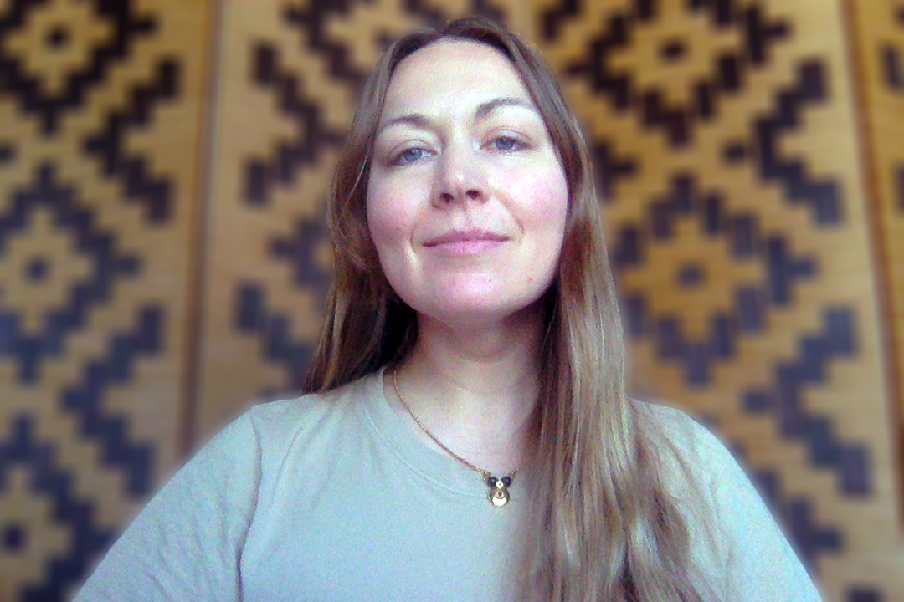
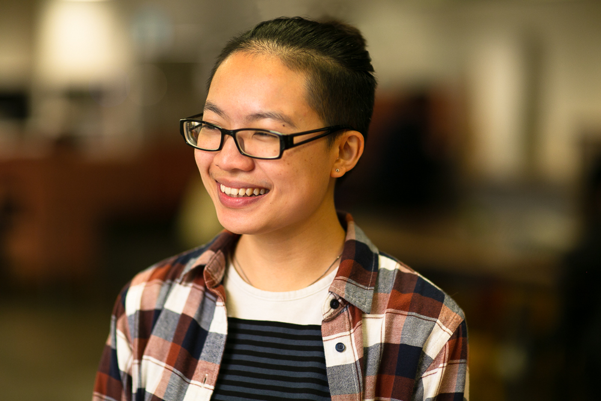

About
Team
-
Margeigh Novotny Vice President
Product Design & Strategy -
Gabriel Escalante Manager
Design Strategy -
Bethany Gerdemann Program Manager
Design Strategy -
Ana Chang Design Research Principal
Product Design -
Eli Asikin-Garmager Design Research Lead
Languages -
Michael Raish Design Research Lead
-
Daisy Chen Senior Design Researcher
Product Design -
Claudia Lo Senior Design Researcher
Community Health